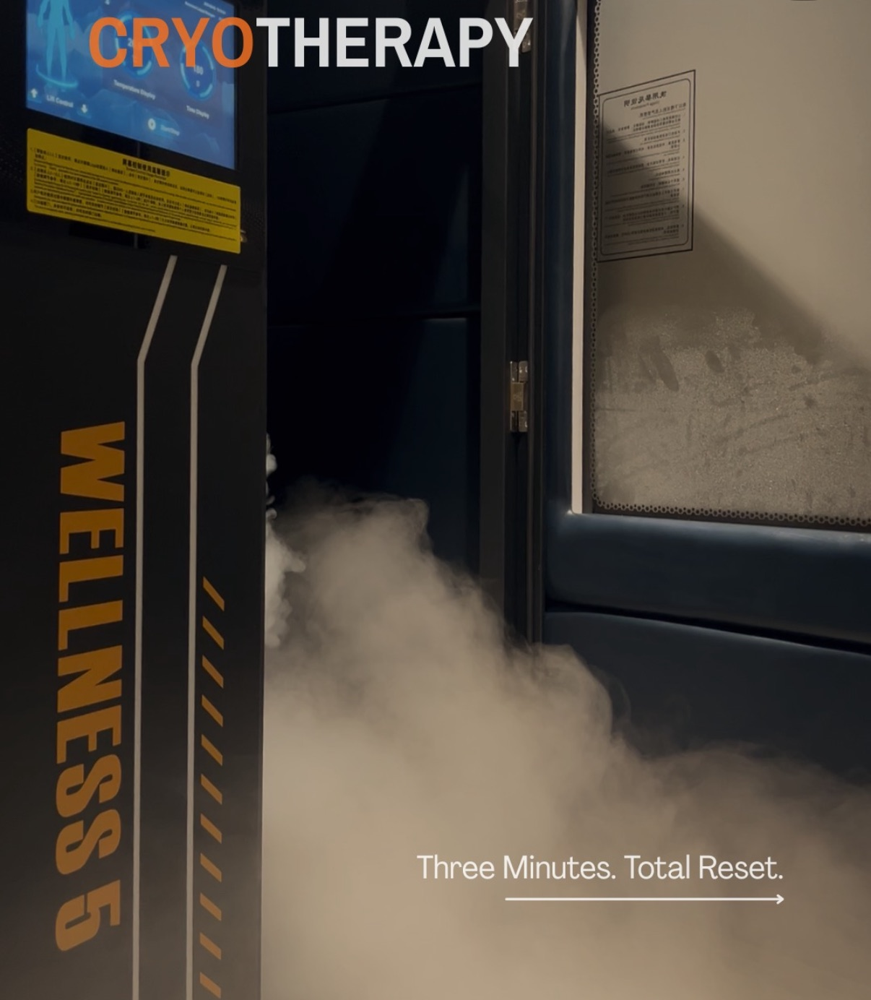
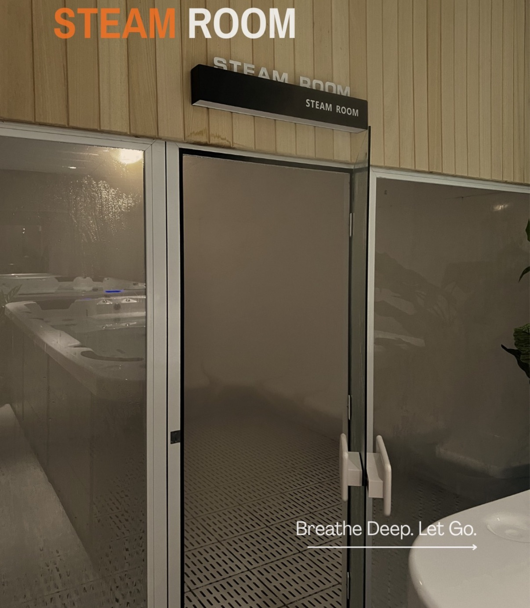

The experiences
Five ways to reset.
Recovery isn't one-size-fits-all. Five experiences under one roof, arranged so a full contrast circuit flows naturally from the moment you walk in.

Cryotherapy
Three minutes. Total reset.
Step into the cryo chamber for a short, intense blast of extreme dry cold. Done first, while you're completely dry, it primes circulation before the rest of the circuit.

Sauna room
Sweat. Reset. Renew.
Traditional dry heat in a full-size cedar sauna. Fifteen minutes in, your muscles let go of the week — the essential first half of the contrast pairing.

Steam room
Breathe deep. Let go.
Humid heat that opens the airways and softens everything the sauna doesn't reach. Slower, gentler, deeply calming.

Ice bath
Find calm in the cold.
Two to four minutes of focused cold in a purpose-built plunge tub. The hard part, and the part you'll come back for.

Thermal pool
Relax in every ripple.
The wind-down. A warm hydrotherapy pool to close the circuit, settle the nervous system and let the session land.

Full body scan
Numbers, not guesswork.
Every session opens with a body composition scan — track how your recovery habit changes you over the weeks.
New to contrast therapy? Tell the team it's your first visit — they'll walk you through the circuit and adjust timings to how your body responds. If you have a heart condition or are pregnant, check with your doctor first.
See it in person.
Photos don't do cold water justice. Book a first session and feel the difference on the way out.